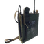

Map
Nearby locations
The 10 closest locations, measured in a straight line between the map markers (1 world unit is 1 metre), with the direction to go from here.
| Location | Kind | Region | Distance | Direction |
|---|---|---|---|---|
 Kalkbrottet Kalkbrottet | Industry | North Coast | 226 m | E |
 Hagaboda East Gate Hagaboda East Gate | Tourist attraction | North Coast | 267 m | W |
 Egorov's Hideout Egorov's Hideout | Other | North Coast | 296 m | SW |
 Soviet Command Quarters Soviet Command Quarters | Soviet site | North Coast | 484 m | W |
| Viskandets Borg | Tourist attraction | North Coast | 582 m | SE |
 Hagaboda Hagaboda | Settlement | North Coast | 723 m | W |
| Soviet Research Lab | Soviet site | North Coast | 849 m | SW |
| Ekebygården | Soviet site | North Coast | 886 m | SE |
| St. Anna Church | Tourist attraction | North Coast | 904 m | S |
 Alby Church Alby Church | Church | North Coast | 919 m | SW |
Safehouse
No safehouse here. The nearest one is Kalkbrottet (North Coast), 247 m to the east.
Collectibles and markers nearby
Collectibles, schematic points, house photos, control points and beacons within 300 m of the location marker, nearest first. The last column is the internal place name the game files give the marker.
| Type | Name | Distance | Direction | Place |
|---|---|---|---|---|
| Apparel Schematic Point | 108 m | W | R7 N012 | |
| House Photo - Quarry Kalkbrottet | 246 m | E | Northcoast Quarry Kalkbrottet | |
| Dalahäst 14 - Yellow | 251 m | E | Northcoast Quarry Kalkbrottet | |
 Soviet Beacons | Soviet Beacon | 267 m | NW | Broadcasting to Soviet forces |
| Soviet Blueprint - Firebird Class C | 273 m | W | Blueprint Firebird Classc Northcoast |
Loot
The location's files list no loot crate spawn points of their own.
Placed loot within 200 m that is closer to Töfta Camping than to any other location (from the interactive map's Extra Locations layer).
| Category | Count | Breakdown |
|---|---|---|
| Crate spots (map layer) | 3 | Apparel packs 2, Equipment boxes 1 |
From the game files
Two crate numbers. The crate spawn points are the
CLootCrateSpawnPoint objects listed in the location files: what your save tracks for a location's loot progress. The crate spots (map layer) are every crate spot of the interactive map's loot layer within 200 m that is nearer to this location than to any other, whichever game file it comes from, so the two numbers rarely match. Neither means a crate is always there: the game may leave a spot empty.Missions
No mission text mentions Töfta Camping by name. See the North Coast region page for the missions of the region.
From the game files
Distances are straight lines on the map between marker positions. A location's area in the game is not a circle, so the 300 m and 200 m radii above are a practical approximation, not the game's own borders.